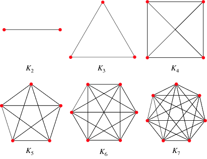
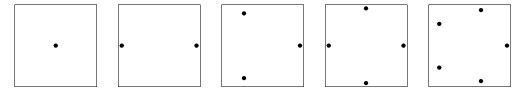
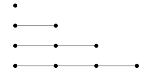
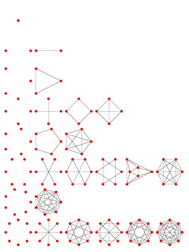
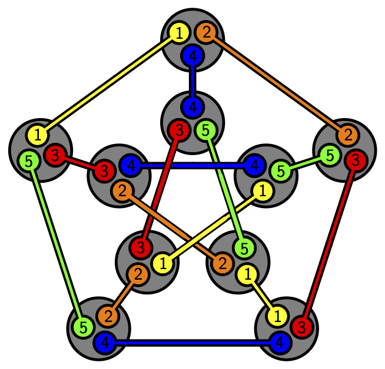
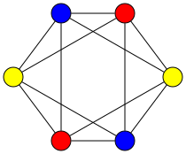
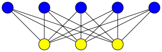
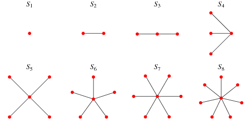
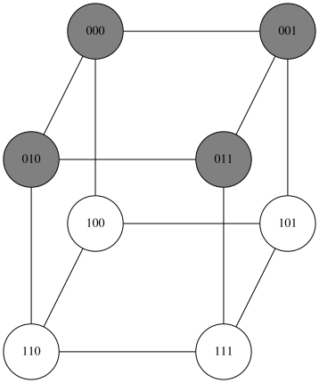

Types of Graphs¶
In this section, we have listed some well-known and important graphs for you. Before introducing them, note that wherever we mention n in this section, it refers to the number of vertices in the graph. Familiarity with these graphs will help you become more comfortable with graphs in general. Additionally, these graphs may be referenced in future exercises, lessons, or other texts without further explanation. If you forget the definition of any of these graphs, you can return to this page for a review.
Complete Graph¶
A graph G where every pair of vertices u and v is connected by an edge is called a complete graph, denoted by \(K_n\).
{kind=link}

Empty Graph¶
A graph G with no edges is called an empty graph. Essentially, the empty graph is the complement of the complete graph, denoted by \(\overline{K_n}\).
{kind=link}

Path Graph¶
A graph G with n - 1 edges where the degree of each vertex is at most 2 is called a path graph, denoted by \(P_n\).
{kind=link}

Cycle Graph¶
A graph G where all vertices have degree 2, and you can travel from any vertex to another by traversing some edges, is called a cycle graph, denoted by \(C_n\).
{kind=link}
Regular Graph¶
A graph where all vertices have the same degree is called a regular graph. If all vertices have degree k, it is called a k-regular graph.
{kind=link}

Petersen Graph¶
Unlike previous sections that covered multiple graphs, this section focuses on a single graph. Construction method:
Take a 5-element set, and for each of its 3-element subsets, create a vertex in the graph. Connect two vertices with an edge if and only if their corresponding subsets share exactly one element.
The Petersen graph has 10 vertices, 15 edges, and each vertex has degree 3.
{kind=link}

k-partite Graph¶
A graph whose vertices can be partitioned into k subsets such that no two vertices within the same subset are adjacent.
{kind=link}

The smallest k for which a graph is k-partite is called its chromatic number, denoted by the Greek letter chi: \(\chi\) or \(\chi (G)\).
Complete k-partite Graph¶
Similar to the k-partite graph defined above, but with the added condition that every pair of vertices u and v from different subsets are connected by an edge. Complete k-partite graphs are denoted by \(K_{a_1,a_2,...,a_k}\). For example, \(K_{a,b,c}\) is a complete 3-partite graph with subsets of sizes a, b, and c, totaling \(a+b+c\) vertices.
Graph \(K_{3,5}\)
{kind=link}

Graph \(K_{2,2,2}\)
Star Graph¶
A graph G where one vertex u is connected to all other vertices, and all other vertices are only connected to u, is called a star graph. Since it is a special case of a complete bipartite graph, it is denoted by \(K_{1,n}\), having n edges and n+1 vertices.
{kind=link}

k-dimensional Hypercube (Cube)¶
Consider all binary strings of length k. Each vertex in the graph corresponds to a unique binary string. Two vertices are connected by an edge if and only if their corresponding strings differ in exactly one digit. For example, when k = 3, the graph looks like this:
{kind=link}

These graphs are denoted by \(Q_k\). - \(Q_1\) resembles a line. - \(Q_2\) resembles a square. - \(Q_3\) resembles a cube.
The graph \(Q_k\) can be constructed by connecting two copies of \(Q_{k-1}\) with edges between corresponding vertices. This property helps in proving other properties of the graph. If the binary strings are interpreted as coordinates in k-dimensional space, \(Q_k\) forms a unit k-dimensional hypercube aligned with the coordinate axes.
This book is made by The Shaazzz contributors.
It is publicly available with cc-by-sa license.
Last updated at مارس 16, 2025.
Rendered by Sphinx (4.3.2) and Minoo theme (Beta 0.9.7).